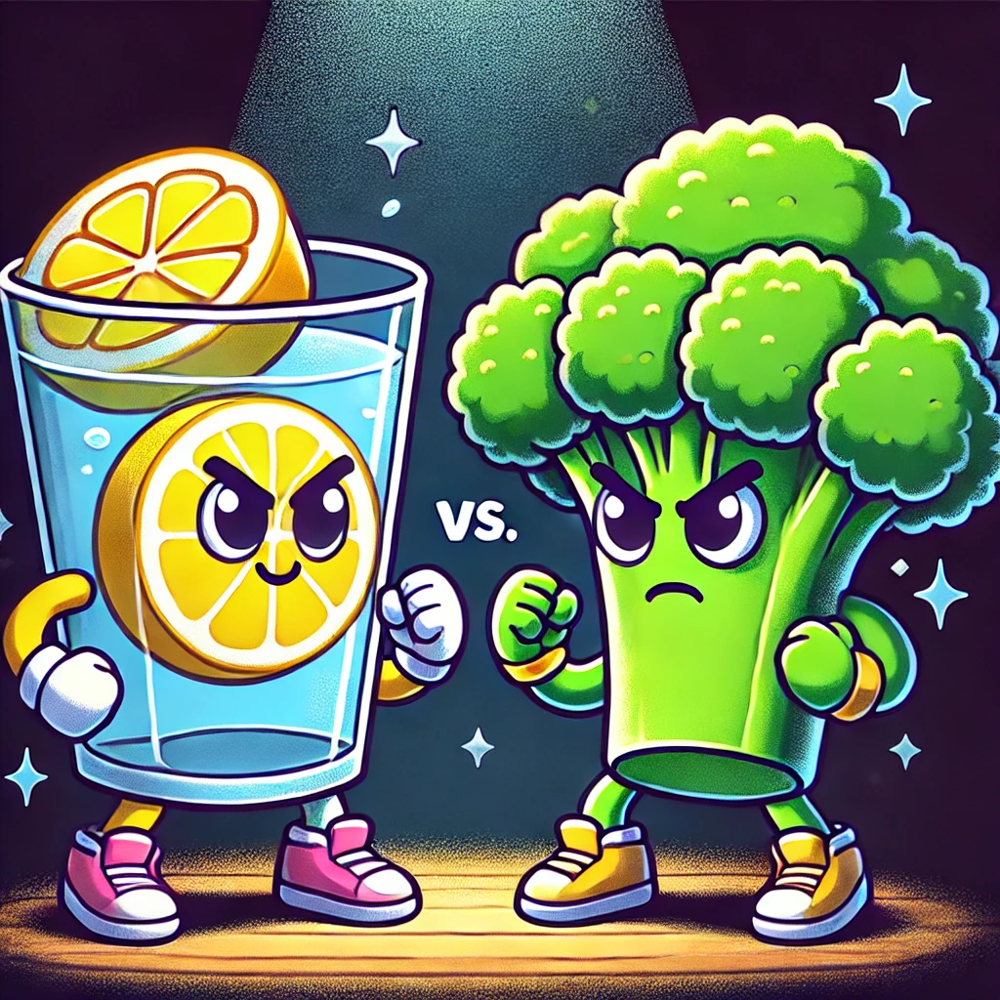

Lemon Detox vs. Other Detox Methods: Pros and Cons
Detoxing has become a popular way to cleanse the body and improve overall health. Among the many detox methods available, lemon detox stands out for its simplicity and effectiveness. In this article, we will compare lemon detox with other detox methods, highlighting the pros and cons of each to help you choose the best approach for your needs.
Lemon Detox
Pros
- Easy to Prepare: Lemon detox is simple and requires minimal ingredients—just fresh lemons and water.
- Rich in Vitamin C: Lemons are high in vitamin C, which supports immune function and skin health.
- Hydrating: Drinking lemon water helps keep the body hydrated, which is essential for detoxification.
- Digestive Aid: Lemon juice stimulates the production of digestive enzymes, promoting better digestion.
- Affordable: Lemons are inexpensive and widely available, making this detox method accessible to everyone.
Cons
- Limited Nutritional Variety: Lemon detox primarily provides vitamin C and hydration but lacks other essential nutrients.
- Potential Acid Reflux: For some people, the acidity of lemon juice can cause or exacerbate acid reflux.
- Temporary Solution: Lemon detox is not a long-term dietary solution and should be part of a balanced diet.
Juice Cleanses
Pros
- Nutrient-Rich: Juice cleanses provide a variety of vitamins, minerals, and antioxidants from different fruits and vegetables.
- Supports Weight Loss: Juice cleanses can lead to rapid weight loss due to reduced calorie intake.
- Improves Digestion: The fiber in juices can aid in digestion and promote regular bowel movements.
Cons
- High Sugar Content: Many juice cleanses contain a high amount of sugar, which can lead to blood sugar spikes.
- Expensive: Commercial juice cleanses can be costly due to the volume of fresh produce required.
- Lacks Protein: Juice cleanses often lack adequate protein, which is essential for muscle maintenance and overall health.
Intermittent Fasting
Pros
- Flexible: Intermittent fasting can be tailored to fit different lifestyles and schedules.
- Supports Weight Loss: Fasting periods can help reduce calorie intake and promote weight loss.
- Improves Metabolic Health: Intermittent fasting has been shown to improve insulin sensitivity and reduce inflammation.
Cons
- Hunger and Fatigue: Fasting can lead to hunger, irritability, and fatigue, especially in the beginning.
- Not Suitable for Everyone: People with certain health conditions, such as diabetes, or those who are pregnant or breastfeeding, should avoid intermittent fasting.
- Potential for Overeating: Some people may overeat during non-fasting periods, negating the benefits of fasting.
Detox Teas
Pros
- Convenient: Detox teas are easy to prepare and can be enjoyed hot or cold.
- Herbal Benefits: Many detox teas contain herbs with specific health benefits, such as ginger for digestion or dandelion for liver support.
- Promotes Hydration: Drinking tea helps keep the body hydrated.
Cons
- Laxative Effects: Some detox teas contain laxatives, which can lead to dehydration and electrolyte imbalances.
- Limited Nutritional Value: Detox teas do not provide a wide range of nutrients and should not replace balanced meals.
- Potential Side Effects: Some ingredients in detox teas can cause side effects, such as stomach cramps or allergic reactions.
Water Fasting
Pros
- Complete Detox: Water fasting allows the body to rest from digestion and focus entirely on detoxification.
- Rapid Weight Loss: Water fasting can lead to quick weight loss due to the absence of calorie intake.
- Cost-Effective: Water fasting is inexpensive since it requires only water.
Cons
- Nutrient Deficiency: Water fasting lacks essential nutrients, leading to potential deficiencies and health risks.
- Physical and Mental Strain: Extended water fasting can cause extreme fatigue, dizziness, and difficulty concentrating.
- Not Sustainable: Water fasting is not a sustainable long-term solution and should be done under medical supervision.
Conclusion
Each detox method has its pros and cons, and the best choice depends on your individual health goals and lifestyle. Lemon detox is a simple, affordable, and effective way to support hydration and detoxification. However, it's important to complement any detox plan with a balanced diet and consult a healthcare professional before making significant changes to your diet. Choose the method that best fits your needs and enjoy the benefits of a cleaner, healthier body.
Comments